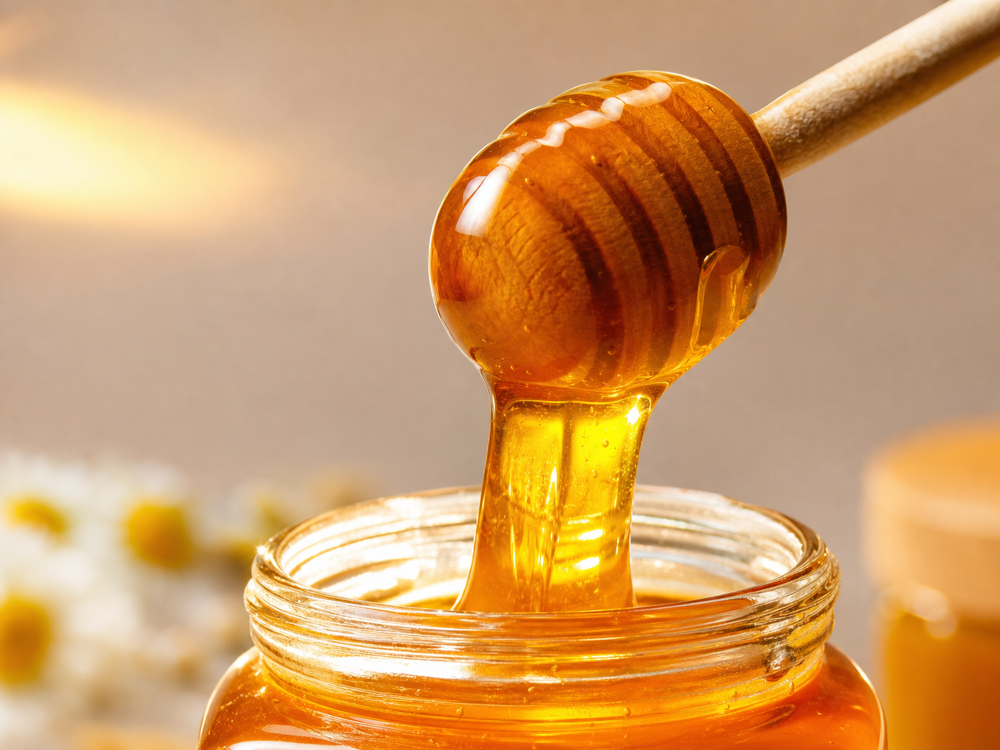
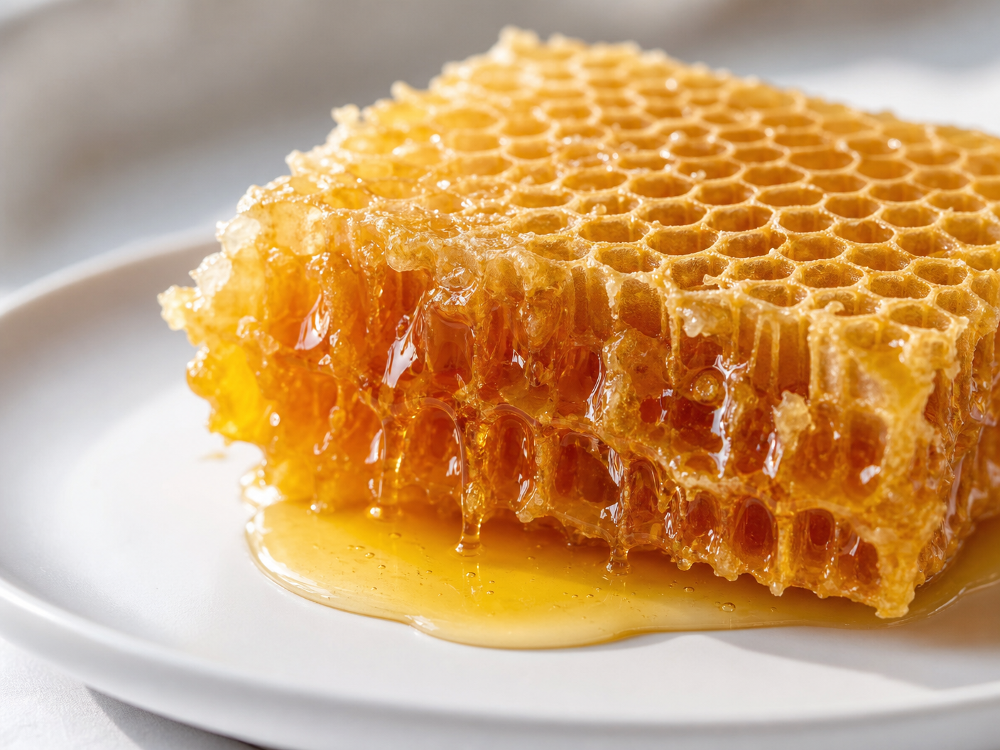

Starodávný "zlatý rituál", který fascinuje české seniory
Zapomenutý přírodní mechanismus, který pomáhá udržovat bystrou mysl a soustředění bez ohledu na věk.

ZJISTIT VÍCE ZDEV České republice se v poslední době stále více mluví o návratu k tradicím, které naši předkové považovali za samozřejmost. Nejde o žádný převratný vědecký objev, ale o znovuobjevení síly "tekutého zlata", které má většina z nás ve své kuchyni, ale málokdo ví, jak ho správně využít.
Odborníci na výživu si všimli, že specifická kombinace přírodních látek obsažených v tomto daru přírody může mít významný vliv na celkovou vitalitu. Tento mechanismus není o zázracích, ale o podpoře přirozených procesů v těle, které nám pomáhají cítit se mentálně svěží i v pokročilém věku.

Proč je tento rituál tak populární právě u lidí nad 60 let? S přibývajícími lety naše tělo přirozeně hledá způsoby, jak si udržet rovnováhu. Tento přírodní mechanismus nabízí cestu, jak podpořit koncentraci a paměť bez nutnosti sahat po syntetických alternativách.
Krátké video, které se šíří mezi českými uživateli internetu, odhaluje přesný postup tohoto rituálu. Vysvětluje, proč je tento konkrétní typ přírodního extraktu tak výjimečný a jak ho můžete začlenit do své ranní rutiny již od zítřka.
Nenechte si ujít tuto příležitost dozvědět se více. Podívejte se na celou prezentaci, dokud je ještě k dispozici, a zjistěte, jak může tento malý krok změnit váš každodenní život.
SLEDOVAT CELÉ VIDEO